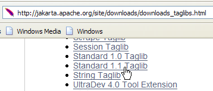
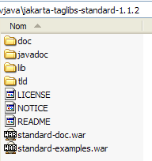
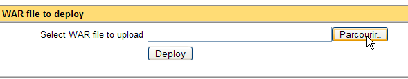
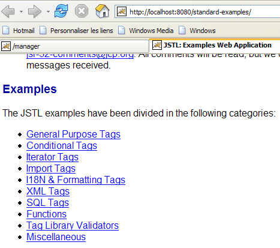
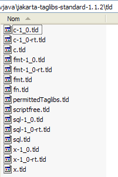

8. La bibliothèque de balises JSTL
8.0.1. Introduction
Considérons la vue [erreurs.jsp] qui affiche une liste d'erreurs :

Il y a plusieurs façons d'écrire une telle page. Nous ne nous intéressons ici qu'à la partie affichage des erreurs. Une première solution est d'utiliser du code Java comme il a été fait :
<%@ page language="java" contentType="text/html; charset=ISO-8859-1"
pageEncoding="ISO-8859-1"%>
<!DOCTYPE HTML PUBLIC "-//W3C//DTD HTML 4.01 Transitional//EN">
<%@ page import="java.util.ArrayList" %>
<%
// on récupère les données du modèle
ArrayList erreurs=(ArrayList)request.getAttribute("erreurs");
String lienRetourFormulaire=(String)request.getAttribute("lienRetourFormulaire");
%>
<html>
<head>
<title>Personne</title>
</head>
<body>
<h2>Les erreurs suivantes se sont produites</h2>
<ul>
<%
for(int i=0;i<erreurs.size();i++){
out.println("<li>" + (String) erreurs.get(i) + "</li>\n");
}//for
%>
</ul>
<br>
<form name="frmPersonne" method="post">
<input type="hidden" name="action" value="retourFormulaire">
</form>
<a href="javascript:document.frmPersonne.submit();">
<%= lienRetourFormulaire %>
</a>
</body>
</html>
La page JSP récupère la liste des erreurs dans la requête (ligne 8) et l'affiche à l'aide d'une boucle Java (lignes 19-23). La page mélange code HTML et code Java, ce qui peut être problématique si la page doit être maintenue par un infographiste qui en général ne comprendra pas le code Java. Pour éviter ce mélange, on utilise des bibliothèques de balises qui vont apporter des possibilités nouvelles aux pages JSP. Avec la bibliothèque de balises JSTL (Java Standard Tag Library), la vue précédente devient la suivante :
<%@ page language="java" contentType="text/html; charset=ISO-8859-1"
pageEncoding="ISO-8859-1"%>
<!DOCTYPE HTML PUBLIC "-//W3C//DTD HTML 4.01 Transitional//EN">
<%@ taglib uri="/WEB-INF/c.tld" prefix="c" %>
<html>
<head>
<title>Personne</title>
</head>
<body>
<h2>Les erreurs suivantes se sont produites</h2>
<ul>
<c:forEach var="erreur" items="${erreurs}">
<li>${erreur}</li>
</c:forEach>
</ul>
<br>
<form name="frmPersonne" method="post">
<input type="hidden" name="action" value="retourFormulaire">
</form>
<a href="javascript:document.frmPersonne.submit();">
${lienRetourFormulaire}
</a>
</body>
</html>
La balise (ligne 4)
signale l'utilisation d'une bibliothèque de balises dont la définition se trouve dans le fichier [/WEB-INF/c.tld]. Ces balises seront utilisées dans le code de la page, préfixées du mot c (prefix="c"). On peut utiliser tout préfixe de son choix. Ici c signifie [core]. Les préfixes permettent d'utiliser des bibliothèques de balises qui pourraient avoir les mêmes noms pour certaines balises. L'utilisation du préfixe lève l'ambiguïté. La nouvelle page n'a plus de code Java aux deux endroits où elle en avait précédemment :
- la récupération du modèle de la page [erreurs, lienRetourFormulaire] (partie disparue)
- l'affichage de la liste des erreurs (lignes 13-15)
La boucle d'affichage des erreurs a été remplacée par code suivant :
<c:forEach var="erreur" items="${erreurs}">
<li>${erreur}</li>
</c:forEach>
- la balise <forEach> sert à délimiter une boucle
- la notation ${variable} sert à écrire la valeur d'une variable
La balise <forEach> a ici deux attributs :
- items="${erreurs}" indique la collection d'objets sur laquelle il faut itérer. Ici, la collection est l'objet erreurs. Où celui-ci est-il trouvé ? La page JSP va chercher un attribut s'appelant "erreurs" successivement et dans l'ordre dans :
- l'objet [request] qui représente la requête transmise par le contrôleur : request.getAttribute("erreurs")
- l'objet [session] qui représente la session du client : session.getAttribute("erreurs")
- l'objet [application] qui représente le contexte de l'application web : application.getAttribute("erreurs")
La collection désignée par l'attribut items peut avoir diverses formes : tableau, ArrayList, objet implémentant l'interface List, ...
- var="erreur" sert à donner un nom à l'élément courant de la collection en cours de traitement. La boucle <forEach> va être exécutée successivement pour chaque élément de la collection items. A l'intérieur de la boucle, l'élément de la collection en cours de traitement sera donc désigné ici par erreur.
La notation ${erreur} insère la valeur de la variable erreur dans le texte. Cette variable n'est pas nécessairement une chaîne de caractères. JSTL utilise la méthode erreur.toString() pour insérer la valeur de la variable erreur. A la place de la notation ${erreur}, on peut également utiliser la balise <c:out value="${erreur}"/>.
Pour en revenir à notre exemple d'affichage des erreurs :
- le contrôleur mettra dans la requête transmise à la page JSP un ArrayList de messages d'erreurs, donc un ArrayList d'objets String : request.setAttribute("erreurs",erreurs) où erreurs est le ArrayList ;
- à cause de l'attribut items="${erreurs}", la page JSP va chercher un attribut appelé erreurs, successivement dans la requête, la session, l'application. Elle va le trouver dans la requête : request.getAttribute("erreurs") va rendre le ArrayList placé dans la requête par le contrôleur ;
- la variable erreur de l'attribut var="erreur" va donc désigner l'élément courant du ArrayList, donc un objet String. La méthode erreur.toString() va insérer la valeur de ce String, ici un message d'erreur, dans le flux HTML de la page.
Les objets de la collection traitée par la balise <forEach> peuvent être plus complexes que de simples chaînes de caractères. Prenons l'exemple d'une page JSP qui affiche une liste d'articles :
où [listarticles] est un ArrayList d'objets de type [Article] qu'on suppose être un Javabean avec les champs [id, nom, prix, stockActuel, stockMinimum], chacun de ces champs étant accompagné de ses méthodes get et set. L'objet [listarticles] a été placé dans la requête par le contrôleur. La page JSP précédente va le récupérer dans l'attribut items de la balise forEach. L'objet courant article (var="article") désigne donc un objet de type [Article]. Considérons la balise de la ligne 3 :
Que signifie ${article.nom} ? En fait diverses choses selon la nature de l'objet article. Pour obtenir la valeur de article.nom, la page JSP va essayer deux choses :
- article.getNom() - on notera l'orthographe getNom pour récupérer le champ nom (norme Javabean)
- article.get("nom")
L'objet [article] peut donc être un bean avec un champ nom, ou un dictionnaire avec une clé nom.
Il n'y a pas de limites à la hiérarchie de l'objet traité. Ainsi la balise
permet de traiter un objet [individu] de type suivant :
class Individu{
private String nom;
private String prénom;
private Individu[] enfants;
// méthodes de la norme Javabean
public String getNom(){ return nom;}
public String getPrénom(){ return prénom;}
public Individu getEnfants(int i){ return enfants[i];}
}
Pour obtenir la valeur de ${individu.enfants[1].nom}, la page JSP va essayer diverses méthodes dont celle-ci qui réussira :
individu.getEnfants(1).getNom() où individu désigne un objet de type Individu.
8.0.2. Installer et découvrir la bibliothèque JSTL
Les explications données précédemment suffiront pour l'application qui nous intéresse mais la bibliothèque de balises JSTL offre d'autres balises que celles présentées. Pour les découvrir, on peut installer un tutoriel fourni dans le paquetage de la bibliothèque.
Nous utiliserons l'implémentation JSTL 1.1 du projet [Jakarta Taglibs] disponible à l'Url [http://jakarta.apache.org/taglibs/] (mai 2006) :
 |  |
 |  |
 |  |
Le fichier zip téléchargé a un contenu analogue au suivant :

Les deux fichiers de suffixe .war sont des archives d'applications web :
- standard-doc : documentation sur les balises JSTL
- standard-examples : exemples d'utilisation des balises
Nous allons déployer cette dernière application au sein de Tomcat. Nous lançons ce dernier via l'option adéquate du menu [Démarrer] puis nous demandons l'Url [http://localhost:8080] et suivons le lien [Tomcat Manager] :

Nous obtenons alors une page d'authentification. Nous nous identifions comme manager / manager ou admin / admin, comme il a été montré au paragraphe 2.3.3.

Nous obtenons une page listant les applications actuellement déployées dans Tomcat :

Nous pouvons ajouter une nouvelle application grâce à des formulaires placés en bas de la page :

Nous utilisons le bouton [Parcourir] pour désigner un fichier .war à déployer.

La copie d'écran ne le montre pas, mais nous avons sélectionné le fichier [standard-examples.war] de la distribution JSTL téléchargée. Le bouton [Deploy] enregistre et déploie cette application au sein de Tomcat.

L'application [/standard-examples] a bien été déployée. Nous la lançons :

Le lecteur est invité à suivre les différents liens offerts par cette page lorsqu'il cherche des exemples d'utilisation des balises JSTL.
L'application [standard-doc] pourra être déployée de la même façon à partir du fichier [standard-doc.war]. Elle donne accès à des informations assez techniques sur la bibliothèque JSTL. Elle présente moins d'intérêt pour le débutant.
8.0.3. Utiliser JSTL dans une application web
Dans les exemples livrés avec la bibliothèque JSTL 1.2, les pages JSP ont en début de fichier la balise suivante :
Nous avons déjà rencontré cette balise au paragraphe 8.1.1, et nous en avons donné une courte explication :
- [uri] : URI (Uniform Resource Identifier) où l'on trouve la définition des balises utilisées dans la page. Cette URI va être utilisée par le serveur web lorsque la page JSP va être traduite en code Java pour devenir une servlet. Elle est également utilisée par les outils de développement de pages web pour vérifier la bonne syntaxe des balises utilisées dans la page ou pour proposer une aide à la frappe. Lorsqu'on commence l'écriture d'une balise, un outil connaissant la bibliothèque peut alors proposer à l'utilisateur les attributs possibles pour cette balise.
- [prefix] : préfixe qui identifie ces balises dans la page
L'uri [http://java.sun.com/jsp/jstl/core] n'est pas utilisable si on n'est pas raccordé à l'internet public. Dans ce cas, on peut placer localement, le fichier de définition des balises. Plusieurs tels fichiers sont fournis avec la distribution JSTL 1.2 dans le dossier [tld] (Tag Language Definition) :

JSTL est en fait un ensemble de bibliothèque de balises. Nous n'utiliserons que la bibliothèque [c.tld] dite bibliothèque " core ". Nous placerons le fichier [c.tld] ci-dessus dans le dossier [WEB-INF] de nos applications :

et mettrons la balise suivante dans nos pages JSP pour déclarer l'utilisation de la bibliothèque " core " :
Si l'utilisation de bibliothèques de balises nous permet d'éviter de mettre du code Java dans les pages JSP, ces balises sont bien sûr traduite en code Java lors de la traduction de la page JSP en servlet Java. Elles utilisent des classes définies dans deux archives [jstl.jar, standard.jar] qu'on trouve dans le dossier [lib] de la distribution JSTL :

Ces deux archives sont placées dans le dossier [WEB-INF/lib] de nos applications :

Nous avons maintenant les bases pour aborder la version suivante de notre application exemple.